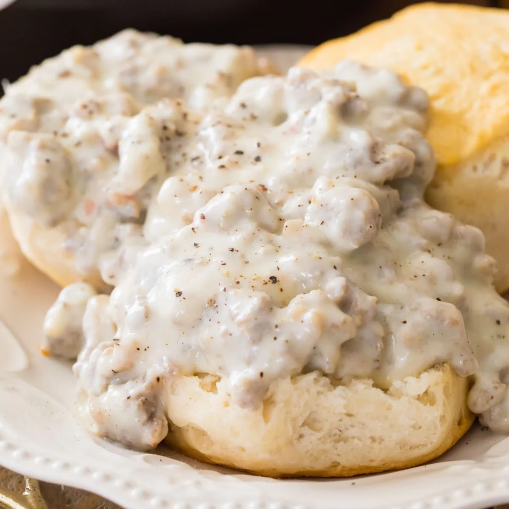

Biscuits and Gravy

Description
In my opinion, the best savory breakfast you can have. Biscuits and gravy includes a flaky biscuits that provides the
base for a homemade sausage gravy. The biscuits can be homemade or store bought. The gravy is where most of the savory flavor comes from and that will be made from scratch. This recipe also
includes some options. The sausage can be regular, maple, or hot. The biscuits can really be any dense breaded component that
pairs with the gravy. The Milk can range from fat free to half/half.
Ingredients
- Pork sausage (1 pound)
- Biscuits
- Flour (1/4 cup)
- Salt
- Pepper
- Milk (2 cups)
Steps
- Preheat and bake biscuits according to label instructions
- Add sausage to pan at medium heat
- Break sausage up and stir
- Cook sausage till no pink remains in meat
- Add flour to cooked sausage in pan and stir
- This should form a roux which will help cook down flour and avoid raw flour taste in finished product
- Add milk to sausage
- Bring to boil while stirring consistently then remove from heat
- Season with salt and pepper to taste
- Cover biscuit with gravy and enjoy!